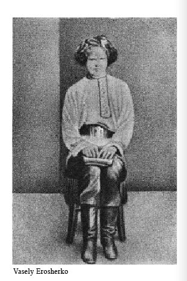

以上为止，我已经从创作家这一面，论过文艺了。那么，倘从鉴赏者即读者、看客这一面看，又怎样说明那很深地伏在无意识心理的深处的苦闷的梦或象征，乃是文艺呢？
我为要解释这一点，须得先说明艺术的鉴赏者也是一种创作家，以明创作和鉴赏的关系。
凡文艺的创作，在那根本上，是和上文说过那样的“梦”同一的东西，但那或一种，却不可不有比梦更多的现实性和合理性，不像梦一般支离灭裂而散漫，而是俨然统一了的事象，也是现实的再现。正如梦是本于潜伏在无意识心理的底里的精神底伤害一般，文艺作品则是本于潜伏在作家的生活内容的深处的人间苦。所以经了描写在作品上的感觉底具象底的事实而表现出来的东西，即更是本在内面的作家的个性、生命、心、思想、情调、心气。换了话说，就是那些茫然不可捕捉的无形无色无臭无声的东西，用了有形有色有臭有声的具象底的人物、事件、风景以及此外各样的事物，作为材料，而被表出。那具象底感觉底的东西，即被称为象征。
所以象征云者，是暗示，是刺激；也无非是将沉在作家的内部生命的底里的或种东西，传给鉴赏者的媒介物。
生命者，是遍在于宇宙人生的大生命，因为这是经由个人，成为艺术的个性而被表现的，所以那个性的别半面，也总得有大的普遍性。就是既为横目竖鼻的人，则不问时的古今，地的东西，无论谁那里都有着共通的人性；或者既生在同时代，同过着苦恼的现代的生活，即无论为西洋人，为日本人，便都被焦劳于社会政治上的同样的问题；或者既然以同国度同时代同民族而生活着，即无论谁的心中，便都有共通的思想。在那样的生命的内容之中，即有人的普遍性共通性在。换句话说，就是人和人之间，是具有足以呼起生命的共感的共通内容存在的。那心理学家所称为“无意识”、“前意识”、“意识”那些东西的总量，用我的话来说，便是生命的内容。因为作家和读者的生命内容有共通性共感性，所以这就因了称为象征这一种具有刺激性暗示性的媒介物的作用而起共鸣作用。于是艺术的鉴赏就成立了。
将生命的内容用别的话来说，就是体验的世界。这里所谓体验（Erlebnis），是指这人所曾经深切的感到过，想过，或者见过，听过，做过的事的一切；就是连同外底和内底，这人的曾经经验的事的总量。所以所谓艺术的鉴赏，是以作家和读者间的体验的共通性共感性，作为基础而成立的。即在作家和读者的“无意识”、“前意识”、“意识”中，两边都有能够共通共感者存在。作家只要用了称为象征这一种媒介物的强的刺激力，将暗示给与读者，便立刻应之而共鸣，在读者的胸中，也炎起一样的生命的火。只要单受了那刺激，读者也就自行燃烧起来。这就因为很深的沉在作家心中的深处的苦闷，也即是读者心中本已有了的经验的缘故。用比喻说，就如因为木材有可燃性，所以只要一用那等于象征的火柴，便可以从别的东西在这里点火。也如在毫无可燃性的石头上，不能放火一样，对于和作家并无可以共通共感的生命的那些俗恶无趣味无理解的低级读者，则纵有怎样的大著杰作，也不能给与什么铭感，纵使怎样的大天才大作家，对于这样的俗汉也就无法可施。要而言之，从艺术上说，这种俗汉乃是无缘的众生，难于超度之辈。这样的时候，鉴赏即全不成立。
这是很久以前的旧话了：曾有一个身当文教的要路的人儿，头脑很旧，脉搏减少了的罢，他看了风靡那时文坛的新文艺的作品之后，说的话可是很胡涂。“冗长地写出那样没有什么有趣的话来，到了结末的地方，是仿佛骗人似的无聊的东西而已。”听说他还怪青年们有什么有趣，竟来读那样的小说哩。这样的老人——即使年纪青，这样的老人世上多得很——和青年，即使生在同时代同社会中，但因为体验的内容全两样，其间就毫无可以共通共感的生活内容。这是欠缺着鉴赏的所以得能成立的根本的。
这不消说，体验的世界是因人而异的。所以文艺的鉴赏，其成立，以读者和作家两边的体验相近似，又在深，广，大，高，两边都相类似为唯一最大的要件。换了话说，就是两者的生活内容，在质底和量底都愈近似，那作品便完全被领会，在相反的时候，鉴赏即全不成立。
大艺术家所有的生活内容，包含着的东西非常大，也非常广泛。科尔律支（S. T. Coleridge）的评沙士比亚，说是“our myriad—minded Shakespeare”的缘故就在此。以时代言，是三百年前的伊利沙伯朝的作家，以地方言，是辽远的英吉利这一个外国人的著作，然而他的作品里，却包含着超越了时间、处所的区别，风动百世之人声闻千里之外的东西。譬如即以他所描写的女性而论，如藉里德（Juliet），如乌斐理亚（Ophelia），如波尔谛亚（Portia），如罗赛林特（Rosalind），如克来阿派忒拉（Cleopatra）这些女人，比起勖里檀（R. B. Sheridan）所写的十八世纪式的女人，或者见于迭更斯（Ch. Dickens）、萨凯来（W. M. Thackeray）的小说里的女人来，远是近代式的“新派”。般琼生（Ben Jonson）赞美他说，“He was not of an age but for all time.”真的，如果能如沙士比亚似的营那自由的大的创造创作的生活，那可以说，这竟已到了和天地自然之创造者的神相近的境地了。这一句话，在或一程度上，瞿提和但丁那里也安得上。
但在非常超轶的特异的天才，则其人的生活内容，往往竟和同时代的人们全然离绝，进向遥远的前面去。生在十八世纪的勃来克（W. Blake）的神秘思想，从那诗集出来以后，几乎隔了一世纪，待到前世纪末欧洲的思想界出现了神秘象征主义的潮流，这才在人心上唤起反响。初期的勃朗宁或斯温班（A. Ch. Swinburne）绝不为世间所知，当时的声望且不及众小诗人者，就因为已经进步到和那同时代的人们的生活内容，早没有可以共通共感的什么了的缘故。就因为超过那所谓时代意识者已至十年，二十年；不，如勃来克似的，且至一百年模样而前进了的缘故。就因为早被那当时的人们还未在内底生活上感到的“生的苦痛”所烦恼，早已做着来世的梦了的缘故。
只要有共同的体验，则虽是很远的瑙威国的伊孛生的著作，因为同是从近代生活的经验而来的出产，所以在我们的心底里也有反响。几千年前的希腊人荷马（Homeros）所写的托罗亚的战争和海伦（Hellen）、亚契来斯（Achilles）的故事，因为其中有着共通的人情，所以虽是二十世纪的日本人读了，也仍然为他所动。但倘要鉴赏那时代和处所太不同了的艺术品，则须有若干准备，如靠着旅行和学问等类的力，调查作者的环境阅历，那时代的风俗习惯等，以补读者自己的体验的不足的部分；或者仗着自己的努力，即使只有几分，也须能够生在那一时代的氛围气中才好。所以在并不这样特别努力，例如向来不做研究这类的事的人们，较之读荷马、但丁，即使比那些更不如，也还是近代作家的作品有趣；而且，即在近代，较之读外国的，也还是本国作家的作品有兴味者，那理由就在此。又在比较多数的人们，凡描写些共通的肤浅平凡的经验的作家，却比能够表出高远复杂的冥想底的深的经验来的作家，更能打动多数的读者，也即原于这理由。朗斐罗（H. W. Longfellow）和朋士（R. Burns）的诗歌，比起勃朗宁和勃来克的来，读的人更其多，被称为浅俗的白乐天的作品，较之气韵高迈的高青邱等的尤为appeal于多数者的原因，也在这一点。
所谓弥耳敦为男性所读，但丁为女性所好；所谓青年而读裴伦，中年而读渥特渥思（W. Wordsworth）；又所谓童话、武勇谭、冒险小说之类，多只为幼年、少年所爱好，不惹大人的感兴等，这就全都由于内生活的体验之差。这也因年龄，因性而异，也因国土，因人种而异。在毫没有见过日本的樱花的经验的西洋人，即使读了咏樱花的日本诗人的名歌，较之我们从歌咏上得来的诗兴，怕连十分之一也得不到罢。在未尝见雪的热带国的人；雪歌怕不过是感兴很少的索然的文字罢。体验的内容既然不同，在那里所写的或樱或雪这一种象征，即全失了足以唤起那潜伏在鉴赏者的内生命圈的深处的感情和思想和情调的刺激底暗示性，或则成了甚为微弱的东西。沙士比亚确是一个大作家。然而并无沙士比亚似的罗曼底的生活内容的十八世纪以前的英国批评家，却绝不顾及他的作品。即在近代也一样，托尔斯泰和萧因为毫无罗曼底的体验的世界，所以攻击沙士比亚；而正相反，如罗曼底的默退林克（M. Maeterlinck），则虽然时代和国土都远不相同，却很动心于沙士比亚的戏曲。
到这里，我还得稍稍补订自己的用语。我在先使用了“体验”、“生活内容”、“经验”这些名词，但在生命既然有普遍性，则广义上的生命这东西，当然能够立地构成读者和作者之间的共通共感性。譬如生命的最显著的特征之一的律动（rhythm），无论怎样，总有从一人传到别人的性质。一面弹钢琴，只要不是聋子，听的人们也就在不知不识之间，听了那音而手舞足蹈起来。即使不现于动作，也在心里舞蹈。即因为叩击钢琴的键盘的音，有着刺激底暗示性，能打动听者的生命的中心，在那里唤起新的振动的缘故。就是生命这东西的共鸣，的共感。
这样子，读者和作家的心境帖然无间的地方，有着生命的共鸣共感的时候，于是艺术的鉴赏即成立。所以读者、看客、听众从作家所得的东西，和对于别的科学以及历史家、哲学家等的所说之处不同，乃是并非得到知识。是由了象征，即现于作品上的事象的刺激力，发见他自己的生活内容。艺术鉴赏的三昧境和法悦，即不外乎这自己发见的欢喜。就是读者也在自己的心的深处，发见了和作者借了称为象征这一种刺激性暗示性的媒介物所表现出来的自己的内生活相共鸣的东西了的欢喜。正如睡魔袭来的时候，我用我这手拧自己的膝，发见自己是活着一般，人和文艺作品相接，而感到自己是在活着。详细地说，就是读者自己发现了自己的无意识心理——在精神分析学派的人们所说的意义上——的蕴藏；是在诗人和艺术家所挂的镜中，看见了自己的灵魂的姿态。因为有这镜，人们才能够看见自己的生活内容的各式各样；同时也得了最好的机会，使自己的生活内容更深，更大，更丰。
所描写的事象，不过是象征，是梦的外形。因了这象征的刺激，读者和作家两边的无意识心理的内容——即梦的潜在内容——这才相共鸣相共感。从文艺作品里渗出来的实感味就在这里。梦的潜在内容，不是上文也曾说过，即是人生的苦闷，即是世界苦恼么？
所以文艺作品所给与者，不是知识（information）而是唤起作用（evocation）。刺激了读者，使他自己唤起自己体验的内容来，读者的受了这刺激而自行燃烧，即无非也是一种创作。倘说作家用象征来表现了自己的生命，则读者就凭了这象征，也在自己的胸中创作着。倘说作家这一面做着产出底创作（productive creation），则读者就将这收纳，而自己又做共鸣底创作（responsive creation）。有了这二重的创作，才成文艺的鉴赏。
因为这样，所以能够享受那免去压抑的绝对自由的创造生活者，不但是作家，单是为“人”而生活着的别的几千万几亿万的常人，也可以由作品的鉴赏，完全地尝到和作家一样的创造生活的境地。从这一点上说，则作家和读者之差，不过是自行将这象征化而表现出来和并不如是这一个分别。换了话说，就是文艺家做那凭着表现的创作，而读者则做凭着唤起的创作。我们读者正在鉴赏大诗篇、大戏曲时候的心状，和旁观着别人的舞蹈、唱歌时候，我们自己虽然不歌舞，但心中却也舞着，也唱着，是全然一样的。这时候，已经不是别人的舞和歌，是我们自己的舞和歌了。赏味诗歌的时候，我们自己也就已经是诗人，是歌人了。因为是度着和作家一样的创造创作的生活，而被拉进在脱却了压抑作用的那梦幻幻觉的境地里。做了拉进这一点暗示作用的东西就是象征。
就鉴赏也是一种创作而言，则其中又以个性的作用为根柢的事，那自然是不消说。就是从同一的作品得来的铭感和印象，又因各人而不同。换了话说，也就是经了一个象征，从这所得的思想、感情、心气等，都因鉴赏者自己的个性和体验和生活内容，而在各人之间，有着差别。将批评当作一种创作，当作创造底解释（creative interpretation）的印象批评，就站在这见地上。对于这一点，法国的勃廉谛尔的客观批评说和法兰斯（A. France）的印象批评说之间所生的争论，是在近代的艺术批评史上划出一个新时期的。勃廉谛尔原是同泰纳（H. A. Taine）和圣蒲孚（Ch.A. Sainte—Beuve） 一样，站在科学底批评的见地上，抱着传统主义的思想的人，所以就将批评的标准放在客观底法则上，毫不顾及个性的尊严。法兰斯却正相反，和卢美忒尔（M. J. Lemaitre）以及沛得等，都说批评是经了作品而看见自己的事，偏着重于批评家的主观的印象。尽量地承认了鉴赏者的个性和创造性，还至于说出批评是“在杰作中的自己的精神的冒险”的话来。至于卢美忒尔，则更其极端地排斥批评的客观底标准，单置重于鉴赏的主观，将自我（Moi）作为批评的根柢；沛得也在他的论集《文艺复兴》（Renaissance）的序文上，说批评是自己从作品得来的印象的解剖。勃廉谛尔一派的客观批评说，在今日已是科学万能思想时代的遗物，陈旧了。从无论什么都着重于个性和创造性的现在的思想倾向而言，我们至少在文艺上，也不得不和法兰斯、卢美忒尔等的主观说一致。我以为淮尔特（Oscar Wilde）说“最高的批评比创作更其创作底”（The highest criticism is more creative than creation）[10]的意思，也就在这里。
说话不觉进了歧路了；要之因为作家所描写的事象是象征，所以凭了从这象征所得的铭感，读者就点火在自己的内底生命上，自行燃烧起来。换句话，就是借此发见了自己的体验的内容，得以深味到和创作家一样的心境。至于作这体验的内容者，则也必和作家相同，是人间苦，是社会苦。因为这苦闷，这精神底伤害，在鉴赏者的无意识心理中，也作为沉滓而伏藏着，所以完全的鉴赏即生命的共鸣共感即于是成立。
到这里，我就想起我曾经读过的波特来尔的《散文诗》（Petites Poémes en Prose）里，有着将我所要说的事，譬喻得很巧的题作《窗户》（Les fenêtres）的一篇来：
从一个开着的窗户外面看进去的人，决不如那看一个关着的窗户的见得事情多。再没有东西更深邃，更神秘，更丰富，更阴晦，更眩惑，胜于一支蜡烛所照的窗户了。日光底下所能看见的总是比玻璃窗户后面所映出的趣味少。在这黑暗或光明的隙孔里，生命活着，生命梦着，生命苦着。
在波浪似的房顶那边，我望见一个已有皱纹的，穷苦的，中年的妇人，常常低头做些什么，并且永不出门。从她的面貌，从她的服装，从她的动作，从几乎无一，我纂出这个妇人的历史，或者说是她的故事，还有时我哭着给我自己述说它。
倘若这是个穷苦的老头子，我也能一样容易地纂出他的故事来。
于是我躺下，满足于我自己已经在旁人的生命里活过了，苦过了。
恐怕你要对我说：“你确信这故事是真的么？”在我以外的事实，无论如何又有什么关系呢，只要它帮助了我生活，感到我存在和我是怎样？
烛光照着的关闭的窗是作品。瞥见了在那里面的女人的模样，读者就在自己的心里做出创作来。其实是由了那窗，那女人而发见了自己；在自己以外的别人里，自己生活着，烦恼着；并且对于自己的存在和生活，得以感得，深味。所谓鉴赏者，就是在他之中发见我，我之中看见他。
我讲一讲悲剧的快感，作为以上诸说的最适切的例证罢。人们的哭，是苦痛。但是特意出了钱，去看悲哀的戏剧，流些眼泪，何以又得到快感呢？关于这问题，古来就有不少的学说，我相信将亚里士多德（Aristoteles）在《诗学》（Peri Poietikes）里所说的那有名的净化作用（catharsis）之说，下文似的来解释，是最为妥当的。
据亚里士多德的《诗学》上的话，则所谓悲剧者，乃是催起“怜”（pity）和“怕”（fear）这两种感情的东西，看客凭了戏剧这一个媒介物而哭泣，因此洗净他郁积纠结在自己心里的悲痛的感情，这就是悲剧所给与的快感的基础。先前紧张着的精神的状态，因流泪而和缓下来的时候，就生出悲剧的快感来。使潜伏在自己的内生活的深处的那精神底伤害即生的苦闷，凭着戏台上的悲剧这一个媒介物，发露到意识的表面去。正与上文所说，医治歇斯迭里病人的时候，寻出那沉在无意识心理的底里的精神底伤害来，使他尽量地表现，讲说，将在无意识界的东西，移到意识界去的这一个疗法，是全然一样的。精神分析学者称这为谈话治疗法，但由我看来，毕竟就是净化作用，和悲剧的快感的时候完全相同。平日受着压抑作用，纠结在心里的苦闷的感情，到了能度绝对自由的创造生活的瞬间，即艺术鉴赏的瞬间，便被解放而出于意识的表面。古来就说，艺术给人生以慰安，固然不过是一种俗说，但要而言之，即可以当作就指这从压抑得了解放的心境看的。
假如一个冷酷无情的重利盘剥的老人一流的东西，在剧场看见母子生离的一段，暗暗地淌下眼泪来。我们在旁边见了就纳罕，以为搜寻了那冷血东西的腔子里的什么所在，会有了那样的眼泪了？然而那是，平日算计着利息，成为财迷的时候，那感情是始终受着压抑作用的，待到因了戏剧这一个象征的刺激性，这才被从无意识心理的底里唤出；那淌下的就无非是这感情的一滴泪。虽说是重利盘剥者，然而也是人。既然是人，就有人类的普遍的生活内容，不过平日为那贪心，受着压抑罢了。他流下泪来得了快感的刹那的心境，就是入了艺术鉴赏的三昧境，而在戏台中看见自己，在自己中看见戏台的欢喜。
文艺又因了象征的暗示性刺激性，将读者巧妙地引到一种催眠状态，使进幻想幻觉的境地；诱到梦的世界，纯粹创造的绝对境里，由此使读者、看客自己意识到自己的生活内容。倘读者的心的底里并无苦闷，这梦，这幻觉即不成立。
倘说，既说苦闷，则说苦闷潜藏在无意识中即不合理，那可不过是讼师或是论理底游戏者的口吻罢了。永格等之所谓无意识者，其实却是绝大的意识，也是宇宙人生的大生命。譬如我们拘守着小我的时候，才有“我”这一个意识，但如达了和宇宙天地浑融冥合的大我之域，也即入了无我的境界。无意识和这正相同。我们真是生活在大生命的洪流中时，即不意识到这生命，也正如我们在空气中而并不意识到空气一样。又像因了给空气以一些什么刺激动摇，我们才感到空气一般，我们也须受了艺术作品的象征的刺激，这才深深地意识到自己的内生命。由此使自己的生命感更其强，生活内容更丰富。这也就触着无限的大生命，达于自然和人类的真实，而接触其核仁。
如上文也曾说过，作为个性的根柢的那生命，即是遍在于全实在全宇宙的永远的大生命的洪流。所以在个性的别一半面，总该有普遍性，有共通性。用譬喻说，则正如一株树的花和实和叶等，每一朵每一粒每一片，都各各尽量地保有个性，带着存在的意义。每朵花每片叶，各各经过独自的存在，这一完，就凋落了。但因为这都是根本的那一株树的生命，成为个性而出现的东西，所以在每一片叶，或每一朵花，每一粒实，无不各有共通普遍的生命。一切的艺术底鉴赏即共鸣共感，就以这普遍性、共通性、永久性作为基础而成立的。比利时的诗人望莱培格（Charles Van Lerberghe）的诗歌中，曾有下面似的咏叹这事的句子：
Ne Suis—Je Vous……
Ne suis—je vous，n’êtes—vous moi，
O choses que de mes doigts
Je touche，et de la lunière
De mes yeux éblouis？
Fleurs où je respire soleil ou je luis，
Ame qui penses，
Qui peut me dire où je finis，
Où je commence？
Ah！que mon coeur infiniment
Partout se retrouve！Que votre seve
C’ est mon sang！
Comme un beau fleuve，
En toutes choses la même vle coule，
Et nous rêvons le même rêve，（La Chanson d’Eve.）
我不是你们么……
阿，我的晶莹的眼的光辉
和我的指尖所触的东西呵，
我不是你们么？
你们不是我么？
我所嗅的花呵，照我的太阳呵，
沉思的灵魂呵，
谁能告诉我，我在那里完，
我从那里起呢？
唉！我的心觉出到处
是怎样的无尽呵！
觉得你们的浆液就是我的血！
同一的生命在所有一切里，
象一条美的河流似的流着，
我们都是做着一样的梦。
（《夏娃之歌》。）
因为在个性的半面里，又有生命的普遍性，所以能“我们都是做着一样的梦”。圣弗兰希斯（St. Francis）的对动物说教，佛家以为狗子有佛性，都就因为认得了生命的普遍性的缘故罢。所以不但是在读者和作品之间的生命的共感，即对于一切万象，也处以这样的享乐底鉴赏底态度的事，就是我们的艺术生活。待到进了从日常生活上的道理、法则、利害、道德等等的压抑完全解放出来了的“梦”的境地，以自由的纯粹创造的生活态度，和一切万象相对的时候，我们这才能够真切地深味到自己的生命，而同时又倾耳于宇宙的大生命的鼓动。这并非如湖上的溜冰似的，毫不触着内部的深的水，却只在表面外面滑过去的俗物生活。待到在自我的根柢中的真生命和宇宙的大生命相交感，真的艺术鉴赏乃于是成立。这就是不单是认识事象，乃是将一切收纳在自己的体验中而深味之。这时所得的东西，则非knowledge而是wisdom，非fact而是truth，而又在有限（finite）中见无限（infinite），在“物”中见“心”。这就是自己活在对象之中，也就是在对象中发见自己。列普斯（Th. Lipps） 一派的美学者们以为美感的根柢的那感情移入（Einfuehlung）的学说，也无非即指这心境。这就是读者和作家都一样地所度的创造生活的境地。我曾经将这事广泛地当作人类生活的问题，在别一小著里说过了。[11]
现在约略地立了秩序，将文艺鉴赏者的心理过程分解起来，我以为可以分作下面那样的四阶段：
第一 理知的作用
有如懂得文句的意义，或者追随内容的事迹，有着兴会之类，都是第一阶段。这时候为作用之主的，是理知（intellect）的作用。然而单是这一点，还不成为真为艺术的这文艺。此外历史和科学底的叙述，无论甚么，凡是一切用言语来表见的东西，先得用理知的力来索解，是不消说得的。但是在称为文学作品的之中，专以，或者概以仅诉于理知的兴味为事的种类的东西也很多。许多的通俗的浅薄的，而且总不能触着我们内生命这一类的低级文学，大抵仅诉于读者的理知的作用。例如单以追随事迹的兴味为目的而作的侦探小说、冒险谭、讲谈、下等的电影剧、报纸上的通俗小说之类，大概只要给满足了理知底好奇心（intellectual curiosity）就算完事。用了所谓“不知后事如何且听下回分解”这好奇心，将读者绊住。还有以对于所描写的事象的兴味为主的东西，也属于这一类。德国的学子称为“材料兴味”（Stoffinteresse）者，就是这个，或者描写读者所见所闻的人物、案件，或者揭穿黑幕；还有例如中村吉藏氏的剧本《井伊大老之死》，因为水户浪士的事件，报纸的社会栏上很热闹，于是许多人从这事的兴味，便去读这书，看这戏：这就是感着和著作中的事象有关系的兴味的。
对于真是艺术品的文学作品，低级的读者也动辄不再向这第一阶段以上前进。无论读了什么小说，看了什么戏，单在事迹上有兴味，或者专注于穿凿文句的意义的人们非常多。《井伊大老之死》的作者，自然是作为艺术品而写了这戏曲的，但世间一般的俗众，却单在内容的事件上牵了注意去了。所以即使是怎样出色的作品，也常常因读者的种类如何，而被抹杀其艺术底价值。
第二 感觉的作用
在五感之中，文学上尤其多的是诉于音乐、色采之类的听觉和视觉。也有像那称为英诗中最是官能底（sensuous）的吉兹（John Keats）的作品一样，想要刺激味觉和嗅觉的。又如神经的感性异常锐敏了的时代的颓唐（decadence）的诗人，即和波特来尔等属于同一系的诸诗人，则尚以单是视觉、听觉——色和音——为不足，至有想要诉于不快的嗅觉的作品。然而这不如说是异常的例。在古今东西的文学中，最主要的感觉底要素，那不待言是诉于耳的音乐底要素。
在诗歌上的律脚（meter）、平仄、押韵之类，固然是最为重要的东西，然而诗人的声调，大抵占着作为艺术品的非常紧要的地位。大约凡抒情诗，即多置重于这音乐底要素，例如亚伦坡（Edgar Allan Poe）的《钟》（Bells），科尔律支说是梦中成咏，自己且不知道什么时候写出的《忽必烈可汗》（Kubla Khan）等，都是诗句的意义——即上文所说的关于理知的分子——几乎全没有，而以纯一的言语的音乐，为作品的生命。又如法兰西近代的象征派诗人，则于此更加意，其中竟有单将美人的名字列举至五十多行，即以此做成诗的音乐的。[12]
也如日本的三弦和琴，极为简单一样，因为日本人的对于乐声的耳的感觉，没有发达的缘故罢，日本的诗歌，是欠缺着在严密的意义上的押韵的，——即使也有若干的例外。然而无论是韵文，是散文，如果这是艺术品，即无不以声调之美为要素。例如：
ほとつきす東雲どきの亂聲に
湖水ほ白き波たつらしき（与谢野夫人）
Hototogis Shinonome Doki no Ranjyo ni
Kos ui wa，hiroki Nami tatsu rashi mo.
杜鹃黎明时候的乱声里，
湖水是生了素波似的呀。
的一首，耳中所受的感得，已经有着得了音乐底调和的声调之美，这就是作为叙景诗而成功了的原因。
第三 感觉的心象
这并非立即诉于感觉本身，乃是诉于想象底作用，或者唤起感觉底的心象来。就是经过了第一的理知，第二的感觉等作用，到这里才使姿态、景况、音响等，都在心中活跃，在眼前仿佛。现在为便宜起见，即以俳句为例，则如：
鱼鳞满地的鱼市之后呵，夏天时候。 子规
白天的鱼市散了之后，市场完全静寂。而在往来的人影也显得萧闲的路上，处处散着银似的白色的鳞片，留下白昼的余痕。当这银鳞闪烁地被日光映着的夏天向晚，缓缓地散策时候的情景，都浮在读者的眼前了。单是这一点，这十七字诗之为艺术品，就俨然地成功着。又如：
五月雨里，遮不住的呀，濑田的桥。 芭蕉
近江八景之一，濑田的唐桥，当梅雨时节，在烟雾模胡中，漆黑地分明看见。是暗示着墨画山水似的趣致的。尤其使第一第二两句的调子都恍忽，到第三句“濑田的桥”才见斤两的这一句的声调，就巧妙地帮衬着这暗示力。就是第二的感觉的作用，对于这俳句的鉴赏有着重大的帮助，心象和声调完全和谐，是常为必要条件之一的。
然而以上的理知作用、感觉作用和感觉底心象，大概从作品的技巧底方面得来，但是这些，不过能动意识的世界的比较底表面底的部分。换了话说，就是以上还属于象征的外形，只能造成在读者心中所架起的幻想梦幻的显在内容即梦的外形；并没有超出道理和物质和感觉的世界去。必须超出了那些，更加深邃地肉薄突进到读者心中深处的无意识心理，那刺激底暗示力触着了生命的内容的时候，在那里唤起共鸣共感来，而文艺的鉴赏这才成立。这就是说打动读者的情绪、思想、精神、心气的意思，这是作品鉴赏的最后的过程。
第四 情绪、思想、精神、心气。
到这里，作者的无意识心理的内容，这才传到读者那边，在心的深处的琴弦上唤起反响来，于是暗示遂达了最后的目的。经作品而显现的作家的人生观、社会观、自然观、或者宗教信念，进了这第四阶段，乃触着读者的体验的世界。
因为这第四者的内容，包含着在人类有意义的一切东西，所以正如人类生命的内容的复杂似的也复杂而且各样。要并无余蕴地来说完他，是我们所不能企及的。那美学家所说的美底感情——即视鉴赏者心中的琴弦上所被唤起的震动的强弱大小之差，将这分为崇高（sublime）和优美（beautiful），或者从质的变化上着眼，将这分为悲壮（tragic）和诙谐（humour），并加以议论，就不过是想将这第四的阶段分解而说明之的一种尝试。
凡在为艺术的文学作品的鉴赏，我相信必有以上似的四阶段。但这四阶段，也因作品的性质，而生轻重之差。例如在散文、小说，尤其是客观底描写的自然派小说，或者纯粹的叙景诗——即如上面引过的和歌俳句似的——等，则第三为止的阶段很着重。在抒情诗，尤其是在近代象征派的作品，则第一和第三很轻，而第二的感觉底作用立即唤起第四的情绪主观的震动（vibration）。在伊孛生一流的社会剧、问题剧、思想剧之类，则第二的作用却轻。英吉利的萧，法兰西的勃里欧（E. Brieux）的戏曲，则并不十足地在读者看客的心里，唤起第三的感觉底心象来，而就想极刻露极直截地单将第四的思想传达，所以以纯艺术品而论，在时竟成了不很完全的一种宣传（propaganda）。又如罗曼派的作品，诉于第一的理知作用者最少；反之，如古典派，如自然派，则打动读者理知的事最大。
便是对于同一的作品，也因了各个读者，这四阶段间生出轻重之差，既有如上文说过那样的低级的读者和看客对于戏曲、小说似的，专注于第一的理知作用，单想看些事迹者；也有只使第二第三来作用，竟不很留意于藏在作品背后的思想和人生观的。凡这些人，都不能说是完全地鉴赏了作品。
我到这里，有将先前说过的创作家的心理过程和读者的来比较一回的必要。就是诗人和作家的产出底表现底创作，和读者那边的共鸣底创作——鉴赏，那心理状态的经过，是取着正相反的次序的，从作家心里的无意识心理的底里涌出来的东西，再凭了想象作用，成为或一个心象，这又经感觉和理知的构成作用，具了象征的外形而表现出来的，就是文艺作品。但在鉴赏者这一面，却先凭了理知和感觉的作用，将作品中的人物、事象等，收纳在读者的心中，作为一个心象。这心象的刺激底暗示性又深邃地钻入读者的无意识心理的底里，就在上文说过的第四的思想、情绪、心气等无意识心理的底里所藏的生命之火上，点起火来。所以前者是发源于根本即生命的核仁，而成了花成了实的东西；后者这一面，则从为花为实的作品，以理知感觉的作用，先在自己的脑里浮出一个心象来，又由这达到在根本处的无意识心理即自己生命的内容去。将这用图来显示则如下：

作家的心底径路，所以是综合底，也是能动底，读者的是分解底，也是受动底。将上面所说的鉴赏心理的四阶段颠倒转来，看作从第四起，向着第一那方面进行，这就成了创作家的心理过程。换了话说，就是从生命的内容突出，向意识心理的表面出去的是作家的产出底创作；从意识心理的表面进去，向生命的内容突入的是共鸣底创作即鉴赏。所以作家和读者两方面，只要帖然无间地反复了这一点同一的心底过程，作品的全鉴赏就成立。
托尔斯泰在《艺术论》（英译What is Art？）里，排斥那单以美和快感之类来说明艺术本质的古来的诸说，定下这样的断案：
一个人先在他自身里，唤起曾经经验过的感情来，在他自身里既经唤起，便用诸动作，诸线，诸色，诸声音，或诸以言语表出的形象，这样的来传这感情，使别人可以经验这同一的感情——这是艺术的活动。
艺术是人类活动，其中所包括的是一个人用了或一种外底记号，将他曾经体验过的种种感情，意识底地传给别人，而且别人被这些感情所动，也来经验他们。
托尔斯泰的这一说，固然是就艺术全体立言的。但倘若单就文学着想，而且更深更细地分析起来，则在结论上，和我上来所说的大概一致。
到这里，上文说过的印象批评的意义，也就自然明白了罢。即文艺既然到底是个性的表现，则单用客观底的理知底法则来批判，是没有意味的。批评的根柢，也如创作的一样，在读者的无意识心理的内容，已不消说。即须经过了理知和感觉的作用，更其深邃地到达了自己的无意识心理，将在这无意识界里的东西唤起，到了意识界，而作品的批评这才成立。即作家那一面，因为原从无意识心理那边出来，所以对于自己的心底经路，并不分明地意识着。而批评家这一面却相反，是因了作品，将自己的无意识界里所有的东西——例如看悲剧时的泪——重新唤起，移到意识界的，所以能将那意识——即印象——尽量地分解，解剖。亚诺德（Matthew Arnold）曾经说，以文艺为“人生的批评”（a criticism of life）。但是文艺批评者，总须是批评家由了或一种作品，又说出批评家自己的“人生的批评”的东西。